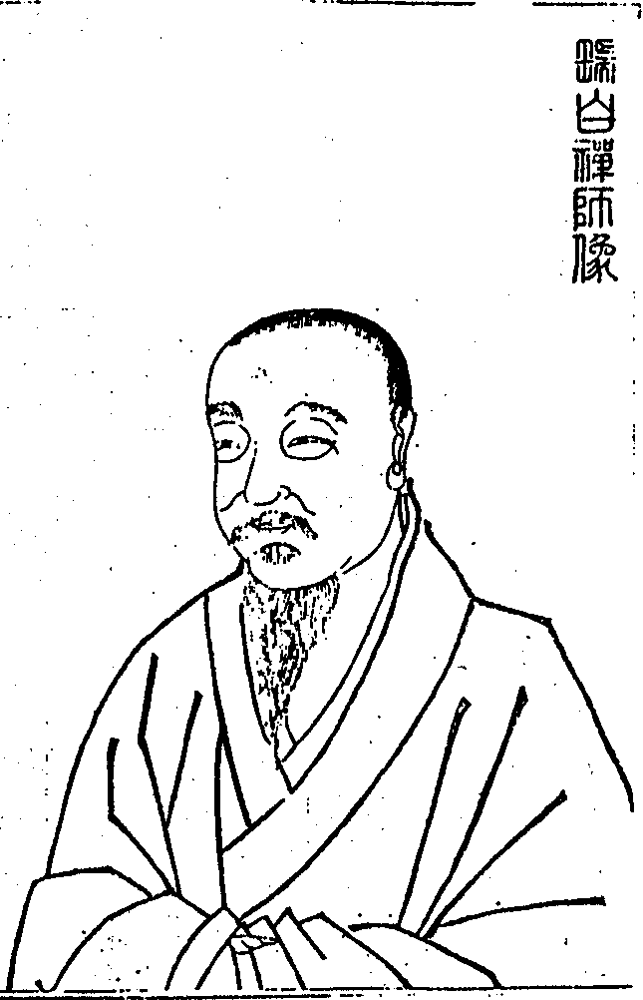
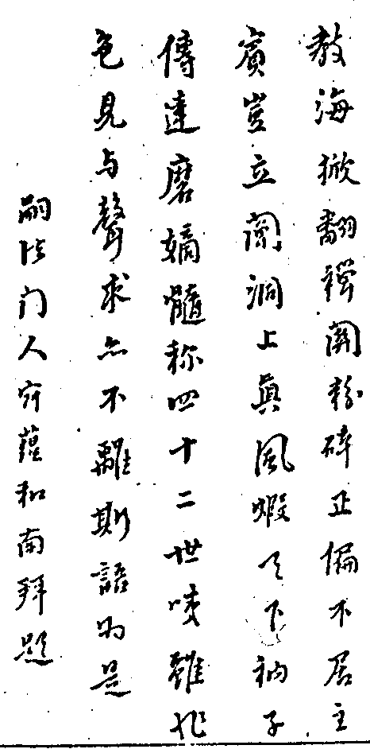

嘉興大藏經 第26冊
No.B188 入就瑞白禪師語錄 (18卷)
【明 明雪說 寂蘊編】
第 1 卷
編刻瑞白禪師語錄序
瑞白大師為雲門湛然大師嫡嗣溯之洞山為三十二世溯之達磨為四十二世宗風大暢將二十年嗣法門人三十餘數崇禎乙亥秋囑嘯雲和尚主天台護國席丙子夏囑久默禪師主弁山龍華席大師退隱崆峒歸寂百丈塔葬龍華嘯雲和尚為大師嫡嗣少林謂之得髓也行道天台重輝寶鏡所謂振佛祖將墜之宗風開人天已翳之眼目使曹洞一宗麗如杲日故錢太師序和尚語錄曰弁山有天台猶孔之有孟老之有莊父子一家弘揚至道皆歸無為之化也予讀之踴躍歡喜非特見和尚之心亦見弁山大師之心矣和尚以深大願力為大師存日所有語錄雖已梓行大傳於世然未刻之散稿尚多不意法兄久默禪師亦隨歸寂況舊有同編之訂未果是以和尚收先後刻未刻者總編為全部成十八卷將大師平日為人一片老婆心重重拈出使後學共覽皆知言即無言其說法七七未談一字與拈花面壁總在此矣秋日上人幻如徵序於予予雖不知禪亦幸忝參席末分固難辭不容不言也時。
舊序
越國宗風雲門倡始而金粟磬山繼之雲門逝弁山興於是曹洞之宗大振余未及見弁山之面然已見其心矣寶鏡懸空十方普照主賓偏正形影歷然洞山禪已屬老漢矣吳興唐祈遠雅有道風杖履往來與師倡和嘗與余訂湖上之盟過弁山而問道虎谿之笑其再見於斯時乎。
黃端伯
祖師西來不立文字然猶怪其垂法諸語較之拈華微指尤章彩兆何也世以下世燈以照燈篇帙之盛幾揜三乘十二分而出其上施設門頭丹青筆意翻引一期室灑增長葛藤啼不止黃葉不輟所謂臨摹古畫轉失本色惟我瑞白禪師不然扼住要津稍通消息將與麼地與麼時與麼機緣向諸人髑髏邊穿卻一雙正法眼如鳥度空如羚羊挂角不存軌則此案真可以捄拖泥帶水者之病既聽雲門曲又從我弁陽看弄遮般師子莫把禪師一片老婆舌作文字理會好。
至道無隱荷擔惟人乃補偏救弊之方則乘時而起無有定執吾儒自六經晦[飢-几+蜀]異喙沸騰程朱子起而彰明輔翼之扶教以明宗也所以玄詮微旨即深造實履而益著繼而訓詁沉埋塗飾規表焚坑之慘諸儒自為之而加烈焉陽明子崛起于萬死一生中與之昏衢寶炬而昭揭中天明宗以扶教也所以匡時持世取諸良知二字卷舒裕如然而總以云救初無偏畸釋氏何獨不然禪宗雖五宗分派總歸一地流行柰道法垂秋不無汎濫承滯語言慧巧穿鑿至以傳燈續命一樁等作沿門戲具吾滋懼焉瑞老大師為雲門冢子暢洞上玄風九坐道場嗣法三十餘人道化條達血系衍繁猗歟盛矣亦知老人致此之繇乎無被寢處者十三年七參尊宿孳孳若渴且甦復絕絕復甦並不輕肯究乃瞥地師之精進謙退何如也若夫身律之嚴而即嚴以率眾如法學習不徇情求諄諄遺教經犯者呵為叛臣逆子尤足砭輓近膏肓衣拂之下尤嚴更無一人竽濫如徒侈熱鬧門頭不顧將來決裂謂法王何至師之拈提個事煆鍊學人真所謂轟雷掣電眼目動定難施鳥道魚蹤光影索摸莫及者矣而一片切切為人熱血讀其書猶將點點滴滴噴吐迸出噫若大師者復何間然行解圓融宗教攝合謂無滲漏善回互卓哉定評乎蓋無滲漏則正令全提善回互則不存軌則所云補偏救弊無有定執者儒與禪寧岐術哉余在護國親遭毒手惜乎辜負婆心今幸嘯雲大師處幾番寒熱流浪知歸始悟嘯大師之願力機權直與老人和玉乳透金針同口出氣而已洞山父子其遺風再振乎茲春重梓全稿成嘯大師之志余亦慫恿之故竟讀新編而齋祓為之序。
入就瑞白禪師語錄目錄
瑞白禪師像


入就瑞白禪師語錄卷之一
上堂
崇禎元年十一月二十七日紹興府太史姜箴聖少府陶石梁封翁余心源孝廉史汝諧凌二鉉文學沈求如管霞標及眾居士等請師繼住雲門顯聖寺崇禎二年九月初十日眾請上堂。
師拈疏云會麼世尊未出世達磨不西來已有這個消息其或未會有煩維那為眾拈出宣疏畢指法座云坐斷千差路魔外不能知威音王未曉彌勒亦生疑咦且看雪上座行履遂登座拈香云此一瓣香三德圓明六通具足發一切智之光華結菩提果之秀麗信手拈來端為供養
本師釋迦牟尼萬德慈尊伏願人人性海圓成個個智門了辦此一瓣香奉為當今
皇帝萬萬歲伏願龍圖如芥城而永固鳳曆齊劫石以長春此一瓣香奉為滿朝文武合國勳貴分守寧紹憲臺紹興府主山會兩縣上下諸衙各位尊官綬章齊顯祿位同尊此一瓣香受靈山之付囑承願力以熏修穿過三綱五常透出止觀定慧爇向爐中端為越州護法宰官居士等福基慧命各願昌隆智種靈苗同希增秀常作國家柱石永為佛法金湯此一瓣香全越威音那畔獨超今世門頭不須雨露滋培寧受雲霞覆育信手拈來端為供養顯聖堂上傳達磨正宗第四十一世湛然大師大和尚用酬法乳之恩遂斂衣就座參頭白槌云法筵龍象眾當觀第一義師云若論此事無人不具無剎不彰圓陀陀包括虛空活潑潑遍呈萬象露裸裸全無滲漏赤條條永絕周遮左右逢源隨流得妙遂豎拂云會麼於此會得一雙孤鹿奔山頭於此不會獨隻雙鸞棲海底乃舉昔日法燈禪師云山僧本欲潛棲巖壑養拙過時柰緣先師有未了公案今日出來特為了卻時有僧問云先師有甚不了公案法燈打云祖禰不了殃及兒孫僧云過在甚麼處燈云過在我殃及汝今日山僧本欲潛棲巖壑養病過時亦為雲門先師有未了公案今日出來特為了卻或有問雲門有甚不了公案只向他道石女驚回霜夜夢木人撲落午天星或云過在甚麼處向道易使清風梳翠竹難教明月住須彌大眾雪上座恁麼舉揚且道與古人相去多少還有辨得出者麼如無更聽一頌秋老園林紅葉飛漁翁月下整竿絲扁舟不向蘆灣宿舉棹金波任往回今日雖不敢與他爭鋒也要諸人據款結案下座問荅不錄。
上堂今朝九月十五翠竹黃花歌舞白雲片片嶺頭明月團團洲渚金風拂拂西來落葉紛紛覆土鴻鴈一聲嘹喨邊塞征人凄楚大眾且道他凄楚個甚麼鴻鴈不來霜不至及其霜至又逄冬僧問昔日世尊拈花示眾和尚今日將何利生師云籬邊黃菊嫩進云劫外靈枝如何拔折師云林中老葉新僧禮拜師下座。
上堂三秋夢過又逄冬綠竹依依笑我儂徹尾徹頭渾不薦白雲空自鎖花宮咦須領略莫朦朧傲霜黃菊今猶在蝴蝶尋香何處容僧問玉峰雪嶺寒葩綻暗吐浮香浸太虛時如何師云一九二九進云還許學人折一枝否師云汝非其人進云卻將何物應天時師云一枝雪裏吐紅霞進云寄報上林游玩客江南特地占先春師云閒言語僧拜師下座。
上堂世尊曰治世語言資生產業皆與實相不相違背夫子曰吾道一以貫之昨夜搗臼生花烏龜發笑香爐峰神惡發驀頭一摑騰過東海撞破龍王腦殼直得血染香水海天明起來大地一交嚴霜會麼會麼久立珍重僧問雪浪掀天舞蒼龍出窟遊正恁麼時如何師云瑞氣滿乾坤進云如何是他靈運行藏處師云布雨不興雲進云布雨不興雲即不問還歸大海事如何師云兩岸東西僧拜師下座。
上堂沒意白雲封嶽麓無心明月印寒潭於是句中全曉會依然又隔一重關既是曉會為甚麼又隔一重關向道莫去歸來背父昔日世尊在神通大光明藏中與清淨慧菩薩云居一切時不起妄念明月團團元不炤于諸妄心亦不息滅春日容容草自青住妄想境不加了知穿花蝴蝶忘情意於無了知不辨真實不知誰是弄香人大小世尊只可抱橋柱洗腳今日雲門雖與他著語猶未剿絕更有一偈舉似大眾香爐飛過海石傘便撐開鐵馬雲中吼泥牛上五臺具眼者辨取僧問黑荳未生芽時如何師云金雞啼半夜進云生後如何師云玉犬吠天明進云黑荳已蒙師指示開花結子事如何師云石傘峰頭明歷歷僧拜師下座。
冬至上堂明明聲色難該歷歷覆藏不可直須言外知歸休向句中擔荷清淨伽藍烏容瞌睡百花叢裡豈可散心石傘峰頭那堪住足萬竹林裏快且翻身鑑湖波底行拳玉笥山頭歌舞還有恁麼人知恁麼事麼良久云暑退三秋起冬至一陽生今日是冬至節屆躍雲禪友入山設齋更請山僧登座說法為大眾結般若緣正所謂財法二施今問大眾且道應時納祐一句作麼生道天寒日色淡水冷草方枯(下座)。
上堂道本無言徒為指示殺活縱奪露布門庭這邊那邊總無正意全身擔荷猶在半途覿體承當奴兒婢子談今論古播弄唇皮驅魔使佛元非尊貴既不恁麼且道畢竟作麼生復高聲云密移一步虛空外鶴出銀籠始是奇僧問這邊那邊即不問大中現小事如何師云金雞初唱佳林曉進云如何是小中現大師云鑑湖月落潭無影進云不大不小又如何師云五雲溪畔木人歌僧禮拜師云切莫承虛接響又僧問朔風凜凜逼冬過白駒馳騁似投梭學人向甚麼處安身立命師云日落海底枯進云還有處也無師云大唐休住足新羅莫倚停僧拜師下座。
上堂正值雞鳴乃云窗前雞唱午屋後鳥鳴中明明相告報休得更朦朧大眾珍重僧問天氣寒冬霜雪皎庭前桂立影娑婆意旨如何師云兩春夾一冬進云恁麼則拔枝弄影去也師云無被煖烘烘僧云葉落歸根時作麼生師云赤條條底僧拜師下座。
雲門先和尚忌日上堂此日先年先年此日四野冰花朔風歷歷正恁麼時且道先師即今在甚麼處良久云木人夜半繡花冠石女天明打破鏡遂下座率眾到像前頂禮拈香云此一瓣香爇在爐中不為別事秪要報冤雪屈且道與先師有甚麼冤讎以手指像云當初只為路長短今朝方覺水河多僧問生如寄死如歸未審先師歸於何處師云石傘峰頭雲靄靄進云幾時復來師云萬竹林中綠依依恁麼多時不見先師面依然不改舊時顏師云莫眼花僧拜師回方丈。
解制上堂把住則黃金失色雲門寺裡拗折拄杖高掛缽囊一個個掃蹤絕跡放行則瓦礫生輝萬竹林中橫擔拄杖緊峭草鞋一個個放光動地且道放行好把住好且待別時來乃舉昔日洞山解制云兄弟東去西去直須向萬里無寸草處去今日雲門不問東去西去直須向枯木生花處去冰河發焰處去只如冰河發焰處作麼生去良久云兔角杖頭挑日月龜毛繩子縳虛空僧問軟草敷座坐九旬界中個個證無生堂裏聖僧證個甚麼師云如是如是進云還向人天說法否師云他從來不開口進云水鳥樹林皆演無生他為甚麼不開口師云只為闍黎不薦僧拜云大眾卻聞法竟師拂拂子下座。
崇禎三年九月廿七日紹興府眾鄉紳太史姜箴聖倪鴻寶藩司徐亮生學憲李玉完孝廉凌二鉉史汝諧及文學眾居士等請師住延慶寺開堂師拈疏云三世諸佛歷代祖師一大事因緣盡向此中漏泄了也會麼若也不會有煩維那為眾拈出宣疏畢指座云寶座從空湧佛日自天開覿面無回互當下絕往來喝一喝遂陞座拈香云此一瓣香供養
本師釋迦牟尼萬德慈尊伏願三途登十地之階九有證菩提之果又拈云此一瓣香奉為當今
皇帝萬萬歲伏願堯風永扇八表安寧舜日高懸四方樂業又拈云此一瓣香奉為滿朝文武合國公卿同布仁風高增祿位又拈云此一瓣香奉為越州護法宰官居士伏願智慧齊日月以長明福慧仝須彌而鞏固又拈云此一瓣香非三草二木之形非青黃赤白之相四時收不得八節豈能該信手拈來供養雲門顯聖堂上湛然大和尚用酬法乳之恩就座白椎竟師云若論第一義只在當人自己二六時中輝輝於萬象之表蕩蕩於六根之門歷歷於聲色之間靈靈於交接之際橫之則周遍法界包括虛空豎之則透徹古今融通三世意欲取之處處無蹤意欲捨之頭頭顯露魔佛齊該聖凡平等應用無虧隨緣自在遂豎拂云會麼若也不會山僧再與你通個消息良久云石牛吐霧三冬暖木馬嘶風六月寒僧問人天輳集龍象雲臻當陽句子請師指示師云杲日團團進云如何便得承當去師云金風颯颯僧拂坐具云謝師指示師云放汝三十棒僧拜師下座。
上堂九月重陽十月朝林中落葉悉蕭蕭鴻鴈北來霜露重四鄰砧杵亂輕敲須領略休自撓當機覿面無逃避莫教辜負我儂豪遂豎拂云會麼水底木人吹鐵笛雲中石女弄琵琶僧問雲門一路人皆委延慶家風事若何師云屋後千竿竹進云忽遇上上根人來如何接取師云門前萬疊山進云金風剪盡秋林葉露出枝頭一點紅師云莫錯會遂下座。
上堂今朝十月十五山河元來故土白雲澹泞無窮秦望峰巒起舞鑑湖徹底清流日月星辰炤普越州瑞氣騰空城中士民輻輳覿面舉似無藏休更迷頭狂走咦山頭翻白浪金牛變作狗僧問云秪如金牛擊桶道菩薩子喫飯來意旨如何師云菊花朵朵黃進云今日檀那設供大眾臨筵和尚又何指示師云芙蓉簇簇嬌進云會中個個肚皮憨師云全賴闍黎力僧拜師下座。
上堂廬陵米價高趙州茶錢大曹山酒甚嚴胡餅無縫鏬南山鱉鼻蛇陝府鐵牛怕延慶拄杖子一齊都按下且道拄杖子具何威光咦放去乾坤窄收來毫髮寬敲落虛空髓攪盡碧波潭遂舉南泉斬貓話云昔日南泉兩堂爭貓師云逐境漂流漢南泉提起云道得即不斬師云雖是落草求人也要決斷是非眾人無語師云死漢也須恁麼始得南泉將貓斬為兩段師云正令當行已展不縮至晚舉似趙州師云秪要圓成前話州戴草鞋而出師云雖是賊過後張弓也要據款結案泉云子若在卻救得貓兒師云重賞之下必有勇夫也是憐兒不覺醜依山僧看來二俱有過南泉顢頇趙州儱侗各與三十棒今日延慶恁麼批判也要諸方簡點會麼若將得失論長短依然辜負祖師機僧問雙劍挂眉間銅頭翻鐵面未知是何人師云雨過青山碧進云滿山荒草為甚麼不住師云鑑湖波浪寬進云恁麼則自在去也師云切忌顯顢頇又僧問不問西來大意請師洞上玄微師云風來水面紋進云甚喜蕩蕩平平無反無側師云鐵船水上游進云盡道寰中天子貴那知閫外有將軍師曰闍黎非為分外僧拜師下座。
上堂碧天皎皎一個金烏藏玉兔星河燦燦兩行玉樹宿烏鴉寂寂鑑湖駕扁舟於蓮野巍巍秦望鎖白雲於林間正恁麼時君臣道合父子一如即不問作麼生是轉身一句良久云庭前翠竹和根拔免教丹鳳再來巢下座。
上堂天寒地凍裂萬象森羅歇水底金烏結廣寒宮亦絕眼中童子疾石女流出血延慶分明說諸人得自得大眾得且不問作麼生是說底事相逄盡是揚家醜幾個休心息是非僧云進無門出無路正恁麼時無回互門路則不問如何是無回互底事師云堂堂獨露身進云恁麼則一輪明月無人管師云五嶽清風秪自知僧拜師下座。
上堂一念普觀無量劫無去無來亦無住遂豎拂子云三世諸佛歷代祖師天下老和尚盡在山僧拂子頭上放光動地談說般若西方極樂世界娑婆世界阿閦世界香積世界一切世界亦在山僧拂子頭上大小相容淨穢交泰重重無礙會麼如此會得十世古今始終不離於當念如此不會無邊剎海自他不隔於毫端今日是仕望陳居士為令先君十周年特自入山齋僧請山僧陞座敷揚般若以此功德惟冀見彌陀於極樂授記莂於蓮臺又豎拂云如此會得君臣道合父子一如其或未會山僧更與通個消息良久云琉璃殿上青苔冷翡翠簾前玉枕寒有僧問檀越設齋請師說法即今陳處士在甚麼處安身師云歸家樂業又僧問一念普觀無量劫無去無來亦無住為甚麼目前有生有死師云空花鏡裏觀僧打圓相云恁麼恁麼聻師云親見彌陀親蒙授記僧拜師下座。
解制上堂百日道場功德聚三身圓現十方尊提起也水到渠成充塞法界放下也風行草偃遍滿乾坤秪如不提不放一句作麼生道良久云吹笛木人腔調美拋梭石女錦綾新僧問一期聖制周圓群士星歸林野轉身句子請師分付師云步步霜花厚進云如何得不涉程途便還本處師云煦日水質清又僧問有佛處不得住無佛處急走過畢竟在何處安身立命師云三冬寒氣重僧打圓相云蒙師指示學人便恁麼去也師云切莫草草匆匆僧拜師下座。
崇禎四年九月湖州府眾鄉紳唐司馬存憶沈司寇何山閔冢宰曾泉朱太史平涵韓太史求仲及孝廉文學眾居士等請師於白雀寺開堂師陞座拈香云此一瓣香虛空包不住大地載不起今日拈來端伸供養
本師釋迦牟尼萬德慈尊伏願三途圓種智九有脫輪迴又拈云此一瓣香奉為當今
皇帝萬歲萬萬歲伏願道德同堯舜帝業等羲皇又拈云此一瓣香奉為分守嘉湖憲臺湖州府主并歸烏二縣上下各衙伏願仁政聞四海德化滿乾坤又拈云此一瓣香受西天之付囑為東土之檀那今日拈來奉為唐司馬沈司寇閔冢宰朱太師韓太史等一班護法宰官及眾孝廉眾居士等伏願道心堅固福祿綿延又拈云此一瓣香無榦無枝四時香馥沒頭沒尾八節光騰端為供養紹興府雲門顯聖堂上湛然大和尚用酬法乳之恩遂就座白椎竟師云秋色漸深滿林紅葉承玉露金風乍起半山冷氣逼人寒徹骨徹髓自家知通天通地何人曉道有也覓之不見絲毫道無也用時遍滿法界觸處靈明何須他覓遂豎拂云會麼烏鴉藏玉樹泥牛舞碧波僧問師唱誰家曲宗風嗣阿誰師云黑狗白雲蹄進云宗旨已蒙師指示曹溪一滴事如何師云泥牛翻白浪僧禮拜又僧問金風吹落林間葉還有不落處也無師云古榦赤條條進云曹溪水白浪滔天還有無波浪處也無師云大地盡皆濕僧拜又僧問擊鼓陞堂即不問獅子出窟事如何師云一聲哮吼驚天地進云青龍崗上生波浪九曲池中水逆流師云未具牙爪在僧呈坐具禮拜師下座。
結制上堂師豎拂云會麼活潑潑觸處靈明圓陀陀隨緣無礙遍法界不離當處該萬有只在目前無古無今貫通三際非彼非此坐斷十方歷劫孤明阿誰無分若能直下領略且喜窮子歸家其或擬議思量枉受伶俜辛苦又豎拂云會麼鐵犬吞大象石女模螺蟴今日是結制之辰乃有沈居士宿稟善根不忘付囑建此法幢令堂太宜人設齋邀同眾居士入山請山僧敷揚般若佛云以大圓覺為我伽藍身心安居平等性智既以大圓覺為我伽藍則十方世界無邊香水海百億須彌百億日月森羅萬象草木叢林盡入山僧大光明藏中既云身心安居平等性智則若聖若凡若人若天若修羅若餓鬼若地獄若畜生悉皆成佛證大解脫個個得真如三昧一相三昧一行三昧無緣三昧直道作麼生是平等性智不因西風起爭得樹頭紅僧問大開爐韝急撾毒鼓選擇聖凡句請師指示師云杲日輝輝進云瞿曇已滅度彌勒未降生阿誰得中師云大眾濟濟進云銅頭鐵額漢如何相見師云兩眼對兩眼進云只如無位真人又作麼生接待師便喝僧禮拜師下座。
上堂漫天網未張唬得金烏藏海底塗毒鼓纔振驚起玉兔上松稍藏白額於煙雲籠金烏於寨嶺龍吟霧起虎嘯風生籬菊呈祥芙蓉現瑞正恁麼時且道是何人境界豎拂云會麼山頭白浪湧海底火正紅拈拂下座。
上堂孝廉唐祈遠居士設齋請師求懺宿業師陞座云杲日初昇大地濃霜盡消滅微火乍降萬山薪積頃成灰任他黑業冰堅憑我智慧了卻喝一喝云若向這裏會得霜也日也薪也火也愚也智也罪也福也染也淨也煩惱也菩提也生死也涅槃也悉皆消滅何故清淨個中元無他物今日祈遠居士乃唐司馬大公子也身處孝廉不受五欲弘荷大法不昧初心決志禪門棲心淨土恐有無始業債以為障道因緣特擔錢糧入山禮懺請山僧舉揚般若以消宿業古云罪從心起將心懺心若無時罪亦忘罪忘心滅兩俱空是則名為真懺悔所以三祖參二祖云弟子罪障深重乞師懺悔二祖云將罪來與汝懺三祖打箇反觀良久云覓罪性了不可得二祖云與汝懺悔竟居士若向這裏會得即如罪性不在內不在外不在中間當下清淨會麼更有箇末後句舉似石女穿針挑蜀錦木人搓線繡鴛鴦欲知懺悔真真意好向其中仔細參西堂出問弁山峰頂雲靄靄太湖波底月團團是何意旨師云籬邊黃菊秀進云即今鐘鼓交參居士臨筵萬象森羅咸皆稽首是甚麼時候師云日午打三更進云只如月落雲收光境俱忘請師再道師云且喜太平進云明暗雙雙俱不炤未審此時作何活計師云楖栗橫擔不顧人堂禮拜云不登弁峰極目望怎識太湖涯際寬師云切莫草草又僧問了則業障本來空為甚麼瞿曇不免金鎗之厄師云鐵馬趁泥牛進云及乎未了者則何如師云金烏啣玉兔僧拂坐具云學人縱橫去也師云且喜沒交涉僧禮拜師擊香臺下座。
上堂扶桑日出須彌突兀北俱盧洲人無貪欲南閻浮提衣足食足特地報知莫生疑惑且作麼生是不疑的事良久云靜倚長松忘百慮抬頭秪見帝王家下座。
上堂師陞座云颯颯西風片片白雲繚亂舞澄澄碧漢團團明月逞全輝不離寂場千江有水千江月無心舒卷萬峰鎖住萬峰寒炤無炤功無炤何妨曾炤來無來相無來豈礙常來古今印同十方合一人人炤燭個個現成會麼有意氣時添意氣不風流處也風流遂豎拂下座。
上堂孟冬初臨大地朔風寒徹骨一陽纔復乾坤萬象氣稍和茅筍土底抽芽水仙盆中發笑梅蕊含玉粒茶花吐珠璣正恁麼時且道是何人分上事咦黑帝令行猶正切那許東風弄柳條下座。
天台護國寺僧月堂紹興府眾鄉紳錢相國麟武陶給諫虎溪啇開府等軒余太史武貞吳孝廉佩茲及眾文學居士致書備禮上弁山白雀寺設齋請師住護國寺上堂乃云好音在耳歷歷風生彌六合真機滿目明明萬象遍乾坤左之右之顯神通江北江南何須覓會麼今日天台護國寺月堂同眾居士至弁山設齋請山僧過天台山僧以弁山期限未滿待三年後方可同諸公搬磚弄瓦運水打柴發揚無為以助國化且作麼生是無為底事戶外竹風聲細細澗中流水響潺潺僧問師搭紫衣登寶座未知說法度何人師云霜花滿地進云三冬瑞雪家家有何須特地又相為師云秪為狂徒渾不薦所以今朝為指明進云等閒識得東風面萬紫千紅總是春師云不因柳毅傳書信怎得家音到洞庭進云說法度人蒙師示應請天台事若何師云古路風霜細進云嶺上寒梅纔放蕊江南早有十分春師云我這裏無此閒事僧禮拜師擊禪床下座。
上堂一九與二九相逄不出手南北嶺頭雲片片冰花就東澗西溪凍斷流猶若銀絲穿古岫大眾正恁麼時寒威沉沉朔風凜凜且道是何人境界良久云一片長空渾若洗兩輪日月壯山河僧問凜凜朔風寒徹髓迸出梅花遍界香正當恁麼時和尚作麼生慶賞師云紅爐添白炭滿酌并淺斟進云慶賞一句蒙師指醉人歸去事如何師云紅羅帳裏睡昏昏進云眉毛尖上呈春色大地全彰白玉洲師云切莫逐境漂流僧禮拜又僧問如何是熾然不二句師云朔風凜凜雪花片片進云恁麼則徹骨徹髓無縫鏬透頂透底絕遮攔師云正好三十棒進云不涉功勳豈受賞罰師云猶有不涉在僧拜師下座。
上堂主山高案山低白虎長青龍短洗缽崖前觸著磕著迎聖道上往往來來且道是何人境界咦不因樵子徑怎到葛翁家今日是沈居士身染微恙道友莫居士等特擔錢糧入山飯僧更請山僧陞座舉揚般若以消夙業更祈世壽與佛壽綿長色身同法身堅固須知古人有語若欲懺悔者端坐念實相且道實相作麼生念良久云木人醉倒乾城裏石女吹簫入畫樓豎拂下座。
上堂今朝臘月一枯木生銀華千峰咸玉聳萬水總白霞古渡迷過客林深隱樵家鳥道無蹤影玄途安可誇大眾正恁麼時六花現瑞寒光散彩且道是正位一色也今時一色也會麼琉璃殿上君臣合珠玉簾垂父子同僧問雪覆青山頂梅花唱好音這段風光事受用是何人師云頑石無高下進云花落雪洋時還成甚麼境師云東湧西沒進云恁麼紅日當空炤清波遍界流師云興波作浪僧禮拜云幾番徹骨寒風盡枯木花開色更濃師云不是時節又僧問朔風凜凜通身是寒徹髓底事如何師云秪要大家知進云徹髓一句蒙師指迸出紅輪又若何師云炤天炤地僧禮拜師下座。
解制上堂一百二十日修煉般若結制於圓覺體中一千四百四十時究無上道解制於光明藏裏其結也枯木寒崖滴水滴凍壁立萬仞凡聖不通掃蹤絕跡其解也陽和氣轉一葉一花聊通一線僧俗曾會覿體全彰結解且置秪如收因結果一句作麼生道良久云乾坤撲落須彌倒透出虛空外面行便下座。